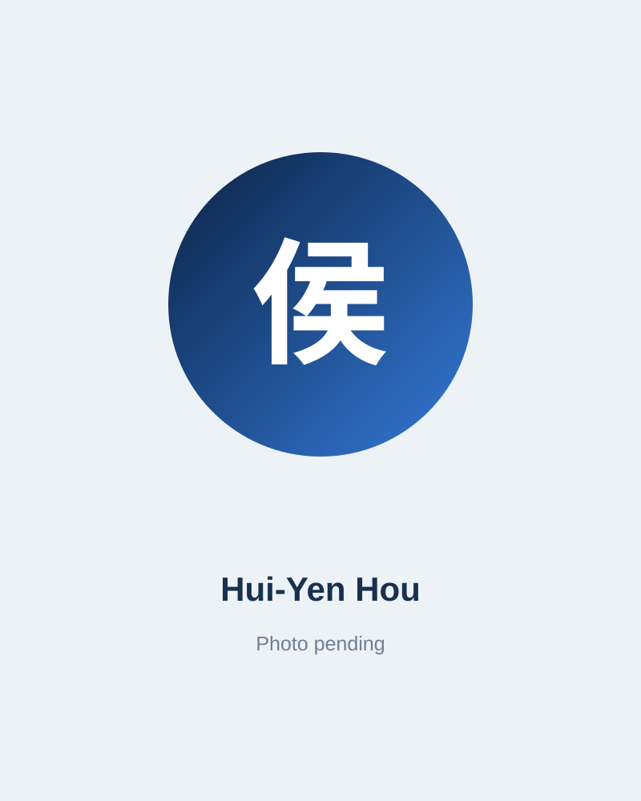
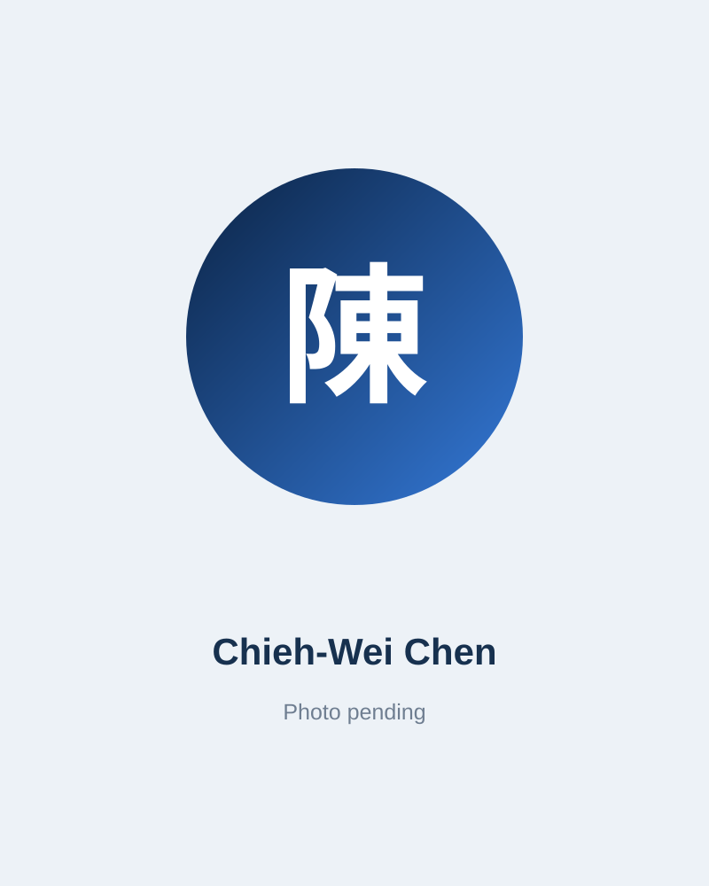
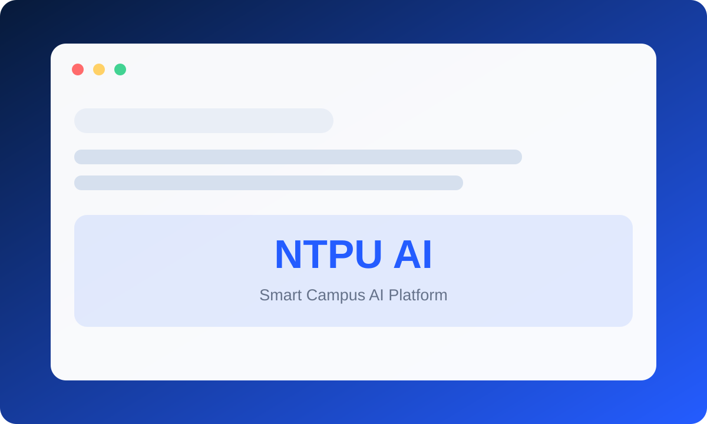
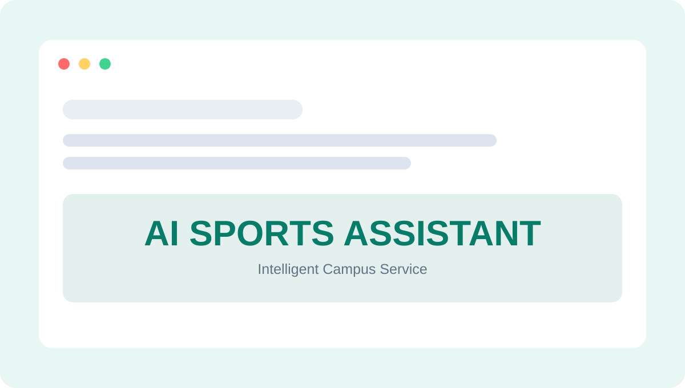

技術開發
生成式 AI、代理式 AI、影像辨識、自動化流程與智慧系統原型開發。
ABOUT
NTPU AI
NTPU AI Aquila Project 結合資訊管理、統計與企業管理等不同背景，提供 AI 技術開發、實作支援，並擔任教育訓練課程助教。
團隊從需求分析、技術選型、原型建置、測試、部署到成果展示，協助校園與合作單位推動可實際使用的 AI 應用。
WHAT WE DO
生成式 AI、代理式 AI、影像辨識、自動化流程與智慧系統原型開發。
需求分析、技術選型、測試除錯、部署與成果展示。
擔任 AI 課程助教，提供課堂協助、實作指導與問題排解。
FACULTY ADVISORS


OUR TEAM

資訊管理研究所・碩二
生成式 AI 應用、ESGPersonal Website ↗
資訊管理研究所・碩二
AI 應用於 ESG 報告書Personal Website ↗
資訊管理研究所・碩二
AI 系統開發、影像辨識統計學系・大四
生成式 AI、Agent、AutomationPersonal Website ↗
資訊管理研究所・碩二
應用於牙科植體的 VLMPersonal Website ↗
資訊管理研究所・碩二
AI 系統開發、影像辨識
企業管理研究所・碩二
行銷、人力資源管理PROJECTS


CONTACT